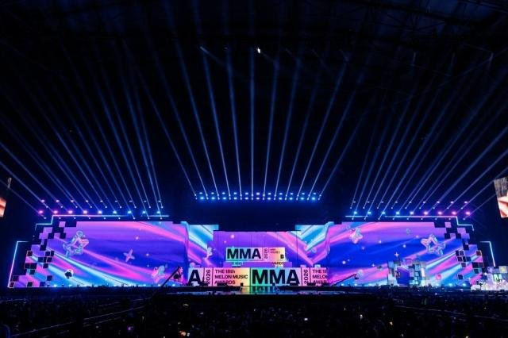
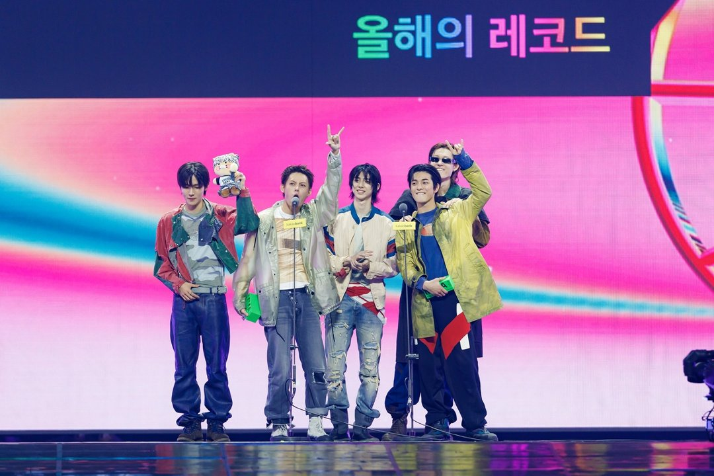
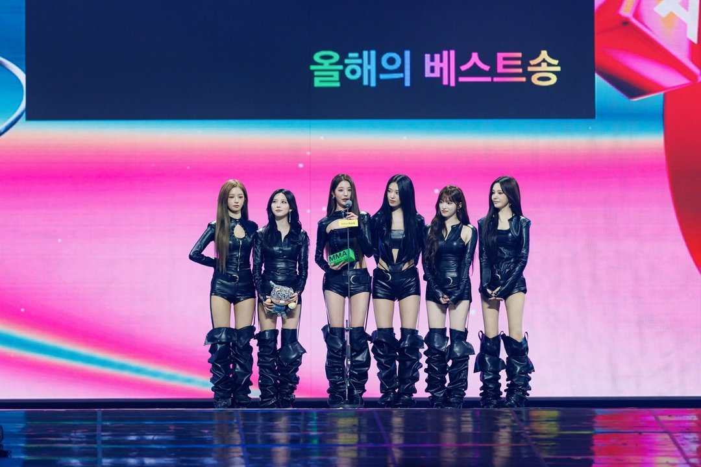
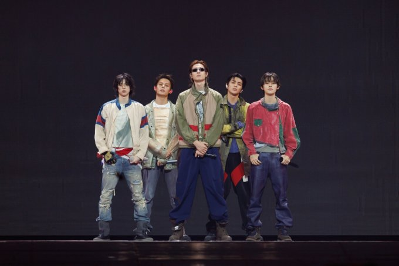

시상식에 오지 않은 팀이 트로피를 가장 많이 가져갔어요. MMA 2026(2026 멜론뮤직어워드) 대상은 모두 5개였고 그중 2개가 방탄소년단 몫이었어요. 이틀에 나뉘어 발표된 수상 결과를 대상부터 다관왕, 신인상 순으로 묶었어요.
📷 사진 1 자리
▲ MMA 2026이 열린 서울 고척스카이돔 무대 · 사진=멜론 제공
대상 5개, 이틀에 나눠 발표됐다
올해 MMA는 11월 14일과 15일 이틀 동안 서울 고척스카이돔에서 열렸어요. 그래서 대상도 날짜별로 따로 발표됐어요.
첫날(DAY1)에는 방탄소년단이 정규 앨범 '아리랑'으로 '올해의 앨범'을, 에스파가 '올해의 글로벌-K 아티스트'를 받았어요.
▶ 영상 1 자리
둘째 날(DAY2)에는 나머지 3개가 나왔어요. '올해의 아티스트'는 방탄소년단, '올해의 레코드'는 코르티스, '올해의 베스트송'은 아이브의 '뱅뱅(BANG BANG)'이에요.
📷 사진 2 자리
▲ '올해의 레코드'를 받은 코르티스 · 사진=멜론 제공
최다 수상은 방탄소년단 6관왕
방탄소년단은 대상 2개에 '베스트 그룹 남자', 'TOP10', '글로벌 TOP10', '스테이지 오브 더 이어'를 더해 6관왕이 됐어요. 월드투어 일정 때문에 현장에는 오지 못했고 영상으로 소감을 전했어요.
영상에서 멤버들은 '아리랑'으로 3년 9개월 만에 돌아온 해를 돌아봤어요. 슈가는 "2026년은 저희가 평생 잊을 수 없는 한 해가 될 것 같다"고 말했어요.
아이브 5관왕, 코르티스는 첫 MMA에 대상
아이브는 '올해의 베스트송', '베스트 그룹 여자', '올해의 뮤직비디오', 'TOP10', '글로벌 TOP10'까지 5개를 받았어요. 데뷔 5주년을 앞두고 받은 대상이라 무대 위에서 안유진을 비롯한 멤버들이 눈물을 보였어요. 장원영은 "전혀 예상하지 못해서 감개무량하다"고 소감을 밝혔어요.
📷 사진 3 자리
▲ '올해의 베스트송'을 받은 아이브 · 사진=멜론 제공
코르티스는 이번이 첫 MMA 참석이었어요. '올해의 레코드'와 'TOP10', '글로벌 TOP10'으로 3관왕에 올랐고 "기대하지 않고 왔는데" 큰 상을 받게 돼 행복하다고 말했어요.
📷 사진 4 자리
▲ MMA 2026 무대에 선 코르티스 · 사진=카카오엔터테인먼트 ‘2026 멜론뮤직어워드’ 제공
▶ 영상 2 자리
신인상과 4관왕 두 팀
신인상인 '올해의 신인'은 알파드라이브원과 롱샷이 함께 받았어요.
NCT 위시와 아일릿은 각각 4관왕이에요. NCT 위시는 '재팬 페이보릿 아티스트'와 '글로벌 임팩트 아티스트' 등을, 아일릿은 '베스트 퍼포먼스 여자'와 '글로벌 임팩트 아티스트' 등을 받았어요. '글로벌 임팩트 아티스트'는 투어스와 하츠투하츠도 함께 이름을 올렸어요.
대상 5개가 네 팀에 고르게 나뉜 해예요. 방탄소년단이 앨범과 아티스트를 가져갔고 곡에 주는 두 상은 아이브와 첫 참석인 코르티스에게 갔으니, 한 팀이 휩쓴 시상식으로 기억하기보다는 '곡의 해'와 '팀의 해'가 갈린 결과로 보는 편이 맞아 보여요.
MMA 2026 대상은 방탄소년단(올해의 아티스트·올해의 앨범), 코르티스(올해의 레코드), 아이브(올해의 베스트송), 에스파(올해의 글로벌-K 아티스트)에게 돌아갔어요. 무대 영상은 멜론 공식 유튜브 채널에서 다시 볼 수 있어요.



